1 二値予測問題問題について
- 二値予測問題とは
- テストに合格したか、しなかったか
- 生きてるか、死んでるか
- 顧客を維持できたか、できなかったか
- 二値の問題なので、ランダムに推測しても50%の正解率は達成できるはず。
- 今回の例題では、機械学習を使用してどのようにオッズを克服するか説明する。
- 解析の参考は以下のkaggleのkernelを参考にしています(ただし社内からでは見られない)
- A Data Science Framework: To Achieve 99% Accuracy
2 データサイエンスのフレームワーク
- 問題定義:
- データサイエンス・AI・ビッグデータ・機械学習を使って何をしたいかを明確にする。
- 機械学習を使わずに問題を解決できるのであれば、使わなくて良い。
- データの収集:
- 問題を解決するためのデータを収集する。
- 探索的データ解析(EDA):
- データの特徴を捉え、仮説を立てる。
- 記述統計的に確認したり(平均、最大・最小値、度数 etc)、ひたすらグラフを書いて、データ内の潜在的な問題を探す。
- データの前処理:
- 解析したいデータを、機械学習のアルゴリズムにインプットするために整形する。
- データを把握しつつ、4C ( Correcting, Completeing, Creating, Converting )の工程を行う(後述)
- データモデルの作成・検証・改良
- 与えられたデータセットと解決したい問題に応じて、データモデルを作成する。
- 作成したデータモデルの精度は十分か、過学習していないか等を考慮しながら改良していく。
- 分析結果を元とした施策の実行
- 解析した結果を元に、施策の実行を行う。
3 問題定義
- 今回の勉強会ではタイタニック号の乗客の生存結果を予測するためのアルゴリズムを開発する。
- プロジェクトの概要は以下の通り(Google翻訳まま)
プロジェクトの概要： RMSタイタニック号の沈没は歴史上最も悪名高い難破船のひとつです。 1912年4月15日、乙女の航海中、タイタニック号は氷山と衝突した後沈没し、2224人の乗客と乗組員のうち1502人が死亡した。このセンセーショナルな悲劇は国際社会に衝撃を与え、船舶の安全規制を改善することにつながりました。
難破船がこのような命の喪失につながった理由の1つは、乗客と乗組員のための救命ボートが十分になかったことです。沈没を乗り切ることには何らかの幸運の要素が関係していましたが、女性、子供、そして上流階級のように、他の人々よりも生き残る可能性が高いグループがありました。
この課題では、どのような種類の人々が生き残る可能性が高いかの分析を完了するようお願いします。特に、どの乗客が悲劇を乗り越えたかを予測するために、機械学習のツールを適用するようお願いします。
4 データの収集
今回のデータはRのtitanic ライブラリのデータを使用。
5 探索的データ解析 & 前処理
今回使用するデータについて、データの内容を解析しつつ機械学習用の前処理を行う。
5.1 ライブラリの読み込み
解析に必要なライブラリを読み込んでいく
## *ライブラリの読み込み----
# tidyverse:
# dplyr, tidyr, purrr などの
# 解析に必要なパッケージが全てまとまったライブラリ
library(tidyverse)
# magrittr:
# パイプ演算子(%>%)の亜種(%<>%, %T>%, %$%)を使用するためのライブラリ
library(magrittr)
# ggplot2:
# グラフ作成用ライブラリ
library(ggplot2)
# infotheo:
# 連続値を離散値に変換するために使用(discretize)
library(infotheo)
# Hmisc:
# リストを見やすく表示するlist.tree()のために使用
library(Hmisc)
# DataExplorer:
# データの概要をレポート形式でまとめてくれるライブラリ
library(DataExplorer)
# rpivotTable:
# ピボットテーブルを作成するライブラリ
library(rpivotTable)
# esquisse:
# ggplotのグラフをGUIで作成するためのライブラリ
library(esquisse)
# mlr:
# 機械学習関連のパッケージが全てまとまったライブラリ
library(mlr)
# DT:
# Rmd形式でデータを出力する際に見やすい形式にするためのライブラリ
# (コード単体を回す際は必要なし)
library(DT)
# titanic:
# 勉強会で使用するデータを読み込むために使用
library(titanic)5.2 データを概要をざっくり確認
head(), summary(), View()などを使ってデータの概略をすばやく確認する。
## *探索的データ分析(EDA) ----
# データの確認(datatableはRmd用, テーブルは横スクロール可能)----
titanic::titanic_train %>% head(50) %>%
datatable(
rownames = FALSE,
class = 'nowrap',
extensions = c('FixedColumns','Scroller'),
options = list(
# FixedColumns
dom = 'Bfrtip',
scrollX = TRUE,
# Scroller
deferRender = TRUE,
scrollY = 200,
scroller = TRUE
)
)# View()でデータの確認
# titanic_train %>% View5.2.1 titanicデータの内容について
各列の意味は以下の通り
| 列名 | 説明 |
|---|---|
| PassengerId | 乗客識別ユニークID |
| Survived | 生存フラグ（0=死亡、1=生存） |
| Pclass | チケットクラス(1=お金持ち、2=一般階級、3=労働階級) |
| Name | 乗客の名前 |
| Sex | 性別（male=男性、female＝女性） |
| Age | 年齢 |
| SibSp | タイタニックに同乗している兄弟/配偶者の数 |
| parch | タイタニックに同乗している親/子供の数 |
| ticket | チケット番号 |
| fare | 料金 |
| cabin | 客室番号 |
| Embarked | 出港地（タイタニックへ乗った港、C=Cherbourg、Q=Queenstown、S=Southampton） |
5.2.2 データのサマリー確認
# クラスの確認----
titanic_train %>% map(class) %>% list.tree()# . = list 12 (2544 bytes)
# . PassengerId = character 1= integer
# . Survived = character 1= integer
# . Pclass = character 1= integer
# . Name = character 1= character
# . Sex = character 1= character
# . Age = character 1= numeric
# . SibSp = character 1= integer
# . Parch = character 1= integer
# . Ticket = character 1= character
# . Fare = character 1= numeric
# . Cabin = character 1= character
# . Embarked = character 1= character# データのサマリーの確認----
# ・titanic_trainではcharacter型のNAが""となっているため、""をNAに変換する
# (NAの数をカウントするため)
# ・character型の列とその他一部の列について、factor型への変換を行う
# (要素数をカウントするため。)
titanic::titanic_train %>%
mutate_if(
.predicate = is.character,
.funs = ~ ifelse(.=="",NA,.) %>% factor
) %>%
mutate_at(
.vars = c('Survived','Pclass','Sex'),
.funs = factor
) %>%
summary# PassengerId Survived Pclass
# Min. : 1.0 0:549 1:216
# 1st Qu.:223.5 1:342 2:184
# Median :446.0 3:491
# Mean :446.0
# 3rd Qu.:668.5
# Max. :891.0
#
# Name Sex Age
# Abbing, Mr. Anthony : 1 female:314 Min. : 0.42
# Abbott, Mr. Rossmore Edward : 1 male :577 1st Qu.:20.12
# Abbott, Mrs. Stanton (Rosa Hunt) : 1 Median :28.00
# Abelson, Mr. Samuel : 1 Mean :29.70
# Abelson, Mrs. Samuel (Hannah Wizosky): 1 3rd Qu.:38.00
# Adahl, Mr. Mauritz Nils Martin : 1 Max. :80.00
# (Other) :885 NA's :177
# SibSp Parch Ticket Fare
# Min. :0.000 Min. :0.0000 1601 : 7 Min. : 0.00
# 1st Qu.:0.000 1st Qu.:0.0000 347082 : 7 1st Qu.: 7.91
# Median :0.000 Median :0.0000 CA. 2343: 7 Median : 14.45
# Mean :0.523 Mean :0.3816 3101295 : 6 Mean : 32.20
# 3rd Qu.:1.000 3rd Qu.:0.0000 347088 : 6 3rd Qu.: 31.00
# Max. :8.000 Max. :6.0000 CA 2144 : 6 Max. :512.33
# (Other) :852
# Cabin Embarked
# B96 B98 : 4 C :168
# C23 C25 C27: 4 Q : 77
# G6 : 4 S :644
# C22 C26 : 3 NA's: 2
# D : 3
# (Other) :186
# NA's :687# 死亡率を計算----
# (常に"死亡した"と予測しても正解率は61.6%程度となる)
Dead_rate = 549/(342+549)
Dead_rate %>% print# [1] 0.61616165.2.3 データ概要の確認結果
Survivedは今回のプロジェクトで推定したい値。- 推定の際は、的確な説明変数の組み合わせを選択することが重要。
- 単に説明変数を増やせば精度が上がる、というわけではない
PassengerIDは乗客を一意に識別するためのIDなので、説明変数には用いない。Ticketについても、乗客に与えられたランダムな識別子として考え、今回は除外。Nameには様々な情報が入っているため、後々特徴量エンジニアリングで使用することができる。- Master. やDr. のtitleから社会的地位を抽出可能
- Mr. や Mrs. のtitleから性別が抽出可能(今回は既にSexの情報があるため使わない)
SibSpやParchは後々、特徴量エンジニアリングで使用。 - 「乗客に含まれる家族の人数」や「乗客が家族なしで乗っていたかどうか」を抽出する。CabinもNameと同じように、様々な情報が含まれている- 事故が発生した時の船内での位置の推定ができそう
- 客室のレベルによる社会的地位の推定ができそう
- ただし、
NAが多いため今回の分析からは除外
5.3 データの詳細な解析 & 前処理
- データの概要を掴んだ後は、以下のような方法でグラフの詳細を分析していく。
- ピボットテーブルを作成してみる。
- ひたすらグラフを書いてみる。
- 思い当たるデータの変形を試してみる。
- データの解析を行いながら、並行して機械学習用の前処理工程も行っていく。
5.3.1 前処理における「4C」
機械学習にかけるための前処理として、以下の「4C」の工程を行う必要がある。
- Correcting
- 異常値は外れ値の修正処理。
- もしデータを確認した際、明らかな異常があれば修正or除外するか決定する。
- 今回のプロジェクトの
sumarry()からは、一見異常(age=800など)は見当たらない。
- Completeing
- データに含まれる
NAに対する補完処理。- 機械学習のアルゴリズムによっては
NAが処理できないため、補完が必要
- 機械学習のアルゴリズムによっては
NAに対する処理としては、以下の方法が基本的- レコードの削除(大半のデータが
NAでない限りは非推奨) - 平均値・中央値で置き換え(定量的データ)
- 最頻値で置き換え(定性的データ)
- 平均値 ± 標準偏差に収まる程度の乱数で置き換え
- 欠損値自体を何かしらの方法で推測
- 手間と計算コストがかかるため、まずは基本的な補完を行うことが先決。
- レコードの削除(大半のデータが
- 今回のプロジェクトでは、
NAに対して以下の処理を行う。Cabin:NAが多いので削除age:中央値を代入Embarked：最頻値を代入
- データに含まれる
- Creating
- 既存の変数を使用して新しい特徴量を作成する(特徴量エンジニアリングとも)
- データサイエンスの芸術的な部分とも言われ、解析者の腕が試される。
- 今回のプロジェクトでは、Nameに含まれるtitleについて特徴量を作成し、Survivedに影響するか確認する。
- 既存の変数を使用して新しい特徴量を作成する(特徴量エンジニアリングとも)
- Converting
- データのフォーマットの変更処理。
mlrでは分類問題の目的変数はfactor型に設定する必要があるため、変換する。- 定量的データはそのままだと機械学習のアルゴリズムにかけられないため、ダミー変数へ変換する。
引き続きデータの探索的解析を行いつつ、同時に前処理も行っていく。
# 探索用データの作成----
# 1. character型の空白行をNAへ変換
# 2. 相関を確認したいcharacter型のみfactor型へ変換(create_report関数への入力用)
# 3. dummy変数であるSurvived/Pclassもfactor型へ変換
# 4. PassengerId は解析に使用しないため削除
data_eda <-
titanic::titanic_train %>%
mutate_if(
.predicate = is.character,
.funs = ~ ifelse(.=="",NA,.)
) %>%
mutate_at(
.vars = c('Survived','Pclass','Sex','Embarked'),
.funs = factor
) %>%
select(-PassengerId)
# 各列のNAの割合を確認----
data_eda %>% plot_missing()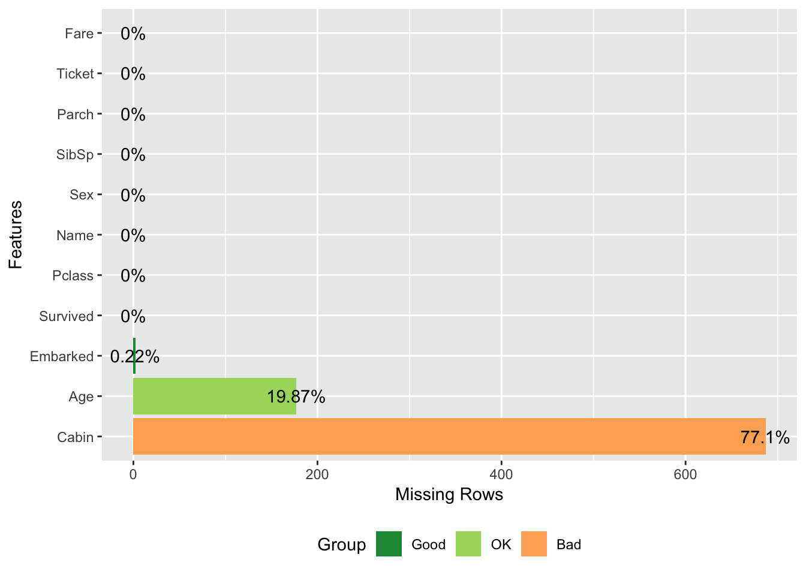
# Completeing:欠損値補完(後述) ----
# 欠損値の多いCabinはデータから削除し
# Age,EmbarkはMedian,Modeで補完
data_eda %<>%
select(-Cabin) %>%
mlr::impute(
cols=list(
Age = imputeMedian(),
Embarked = imputeMode()
)
) %>% .$data5.3.2 詳細解析に役立つパッケージ
以下の3つのパッケージはすばやくデータを確認する際に役立つ。
DataExplorer: データの概要をグラフ化したレポートを自動で作成する。rpivotTable: ピボットテーブルが作成できるパッケージ。esquisser: GUIでggplot2の作成ができるパッケージ。
# 詳細解析に便利なパッケージ3種類----
# レポートの作成
#data_eda %>% DataExplorer::create_report()
# ピボットテーブルの確認
#data_eda %>% rpivotTable::rpivotTable()
# 単純なグラフの確認
#data_eda %>% esquisse::esquisser()5.3.3 グラフによるデータの解析
5.3.3.1 性別と生存率
男性より女性のほうが生存率が高い 
5.3.3.2 年齢と生存率
生存者/死亡者の密度曲線
- 年齢が18歳以下であれば死亡者より生存者のほうが多い
- 年齢が65歳以上になると死亡率が大きくなる。
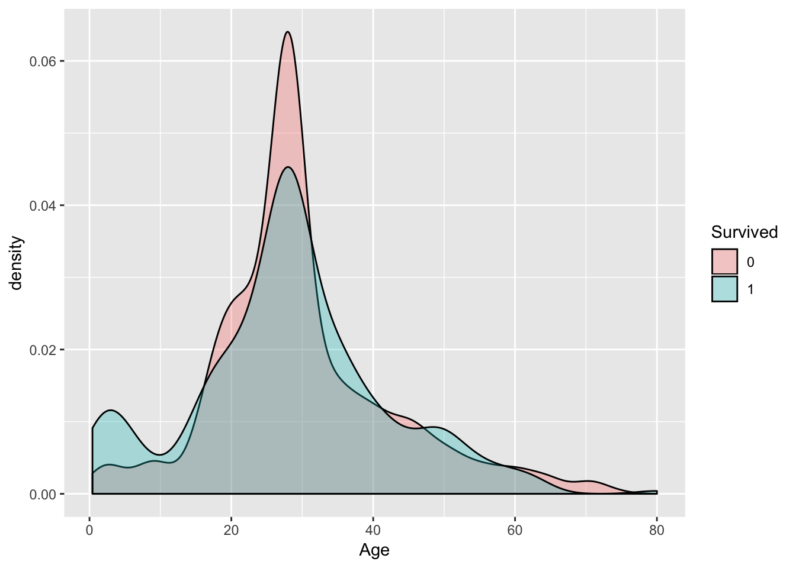
年齢をbiningして生存率を確認する。
# 年齢をbiningして生存率を確認する
data_eda %<>%
mutate(
AgeBin = Age %>% discretize(disc="equalwidth",nbins=6) %>% .$X %>% factor
)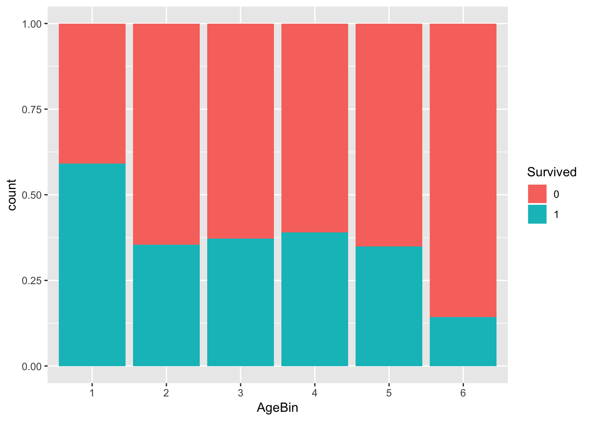
5.3.3.3 Pclassと生存率
- 部屋の等級が上がっていくにつれて生存率が高くなる
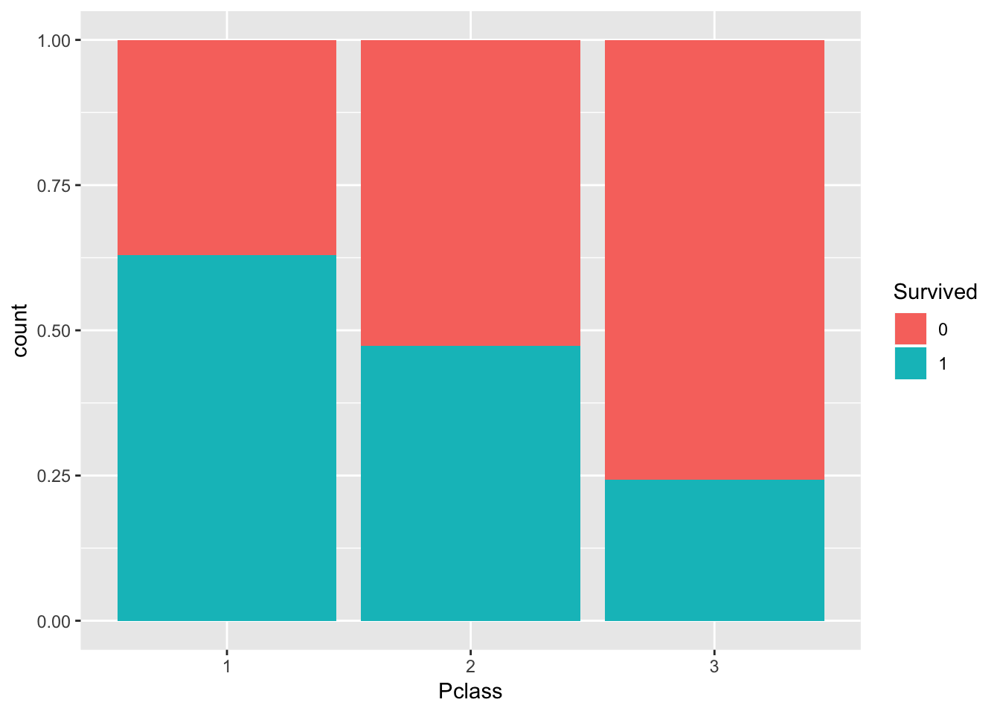
5.3.3.4 Fareと生存率
生存者/死亡者の密度曲線
- 乗船料が高くなるほど生存率も高くなる。
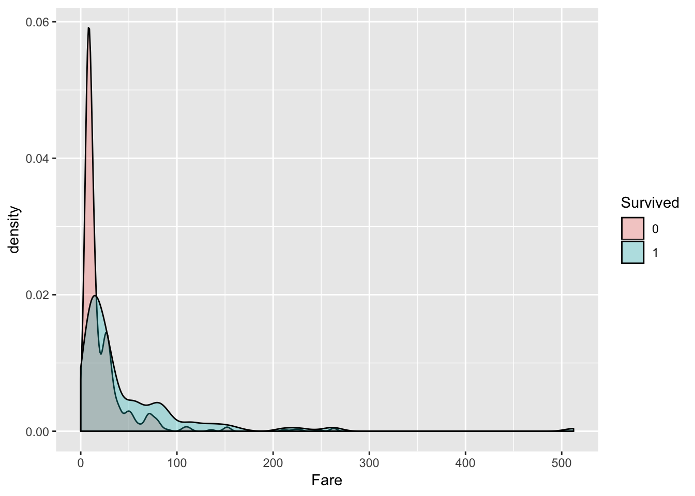
Fareをbiningして生存率を確認する。
# Fareをbiningして生存率を確認する
data_eda %<>%
mutate(
FareBin = Fare %>% discretize(disc="equalfreq",nbins=5) %>% .$X %>% factor
)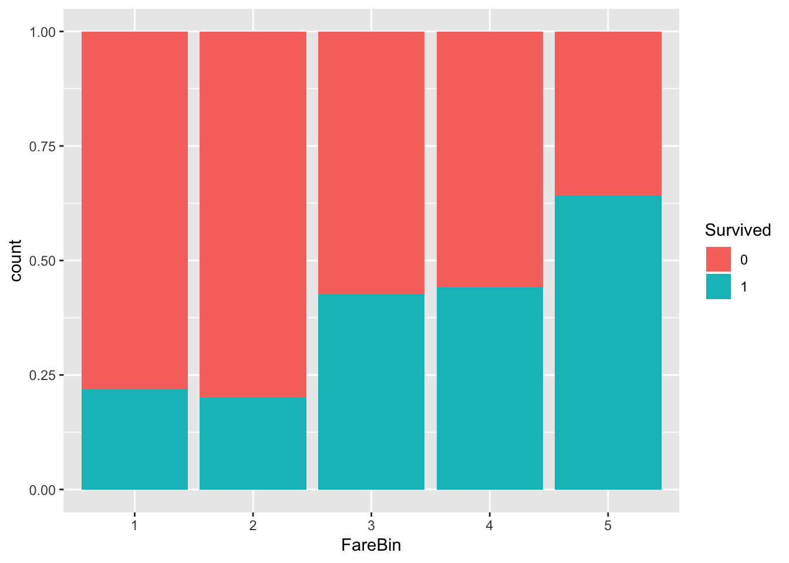
5.3.3.5 Embarkedと生存率
- 出港地がC, Q, Sの順に生存率が高い。
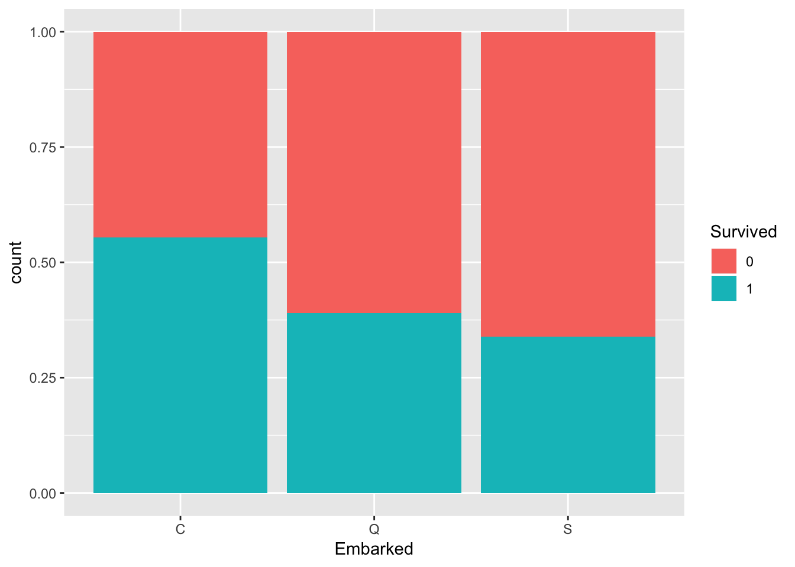
Pclass別にEmbarked別の生存率を確認
Pclassが同じでも、出港地がCであれば生存しやすく、Sであれば死亡しやすい
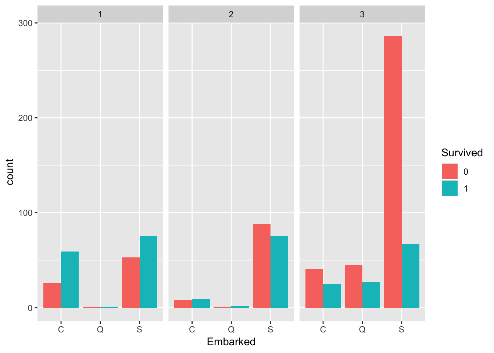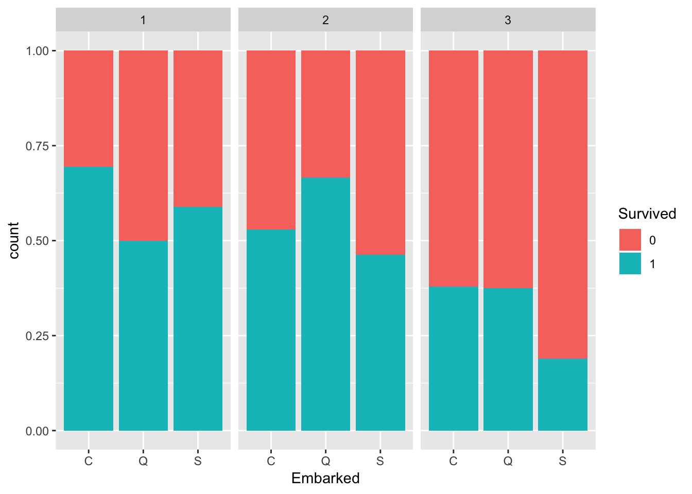
5.3.3.6 SibSp/Parchと生存率
SibSpは兄弟/配偶者の数。Parchは親/子供の数。SibSpは2の乗客が最も生存率が高く、その後SibSpが高くなるに連れ生存率は下がる。Parchは4以上になると生存率が極度に低くなる。
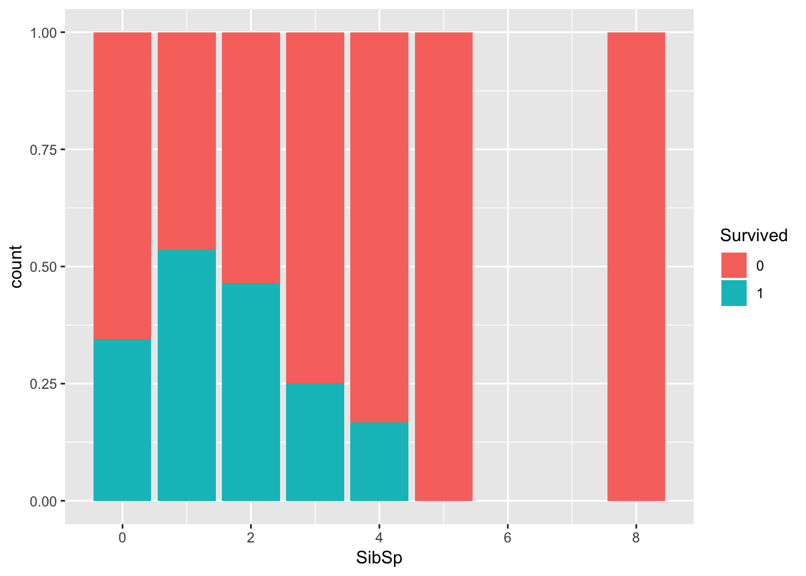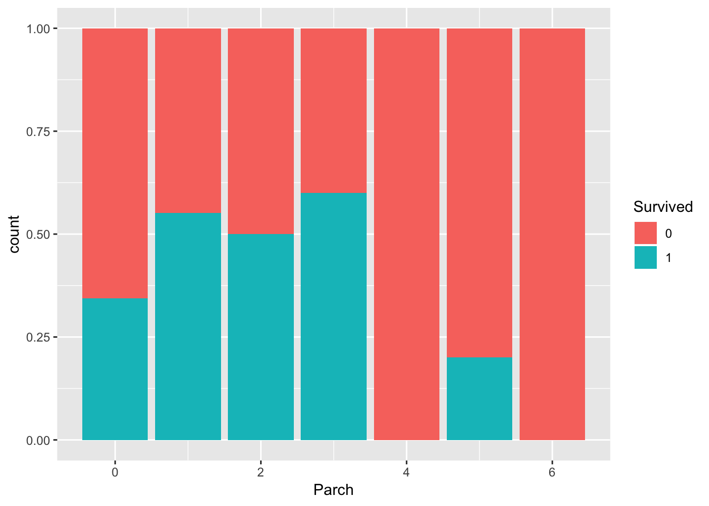
新たにFamilySize, IsAloneといった特徴量を作成し、生存率を確認してみる。
FamilySizeSibSp+Parch+1で算出。IsAloneSibSpとParchの両方が0であればAlone,それ以外であればNotAloneとする。
# FamilySizeと生存確率の確認
data_eda %<>% mutate(FamilySize = SibSp+Parch+1)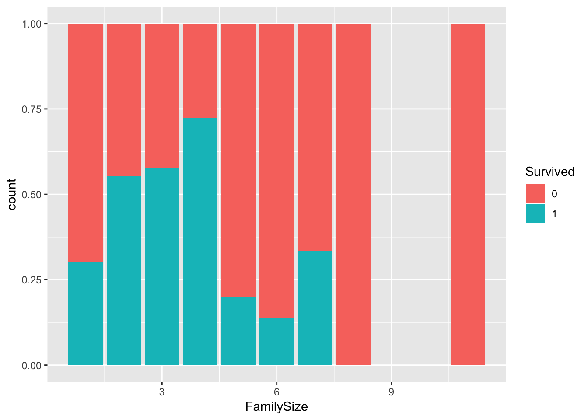
# IsAloneフラグ(乗客に家族がいるか)で生存率が変わるか確認
# (独り身は死亡しやすい)
data_eda %<>% mutate(IsAlone = ifelse(SibSp+Parch==0,"Alone","NotAlone") %>% factor)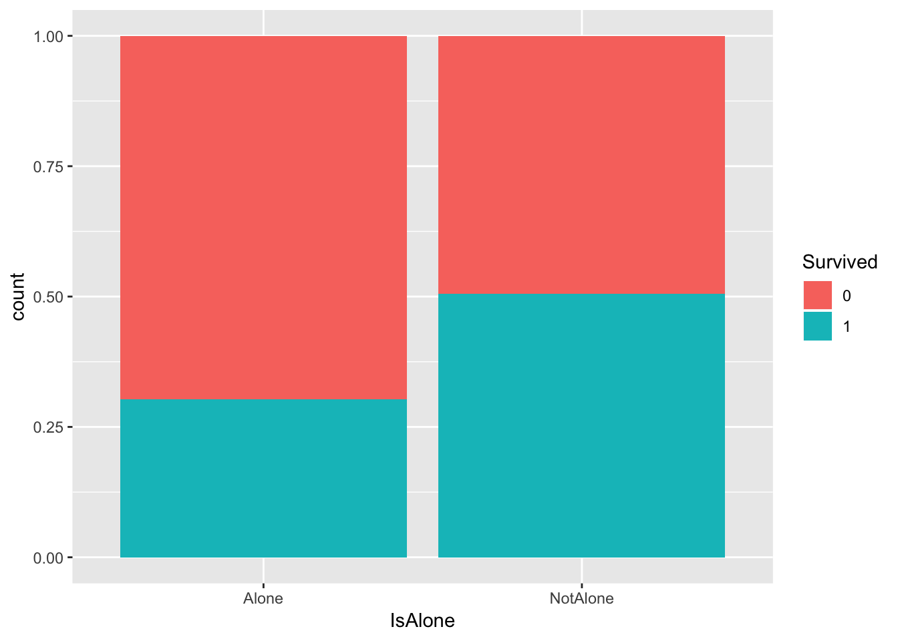
作成したFamilySize, IsAloneが生存率を説明する有効な特徴量かを確認。
SurvivedとFamilySizeはあまり相関が見えないSurvivedとIsAloneは、SibSpやParchよりも強い相関があることがわかる。- このため、
IsAloneは新たな特徴量として後ほど採用する。
- このため、
# FamilySize, IsAloneとSurvivedの相関を確認----
# IsAloneはSurvivedと相関が強いため、新たな特徴量として後ほど使用
data_eda %>%
select(
Survived,
SibSp,
Parch,
FamilySize,
IsAlone
) %>%
plot_correlation()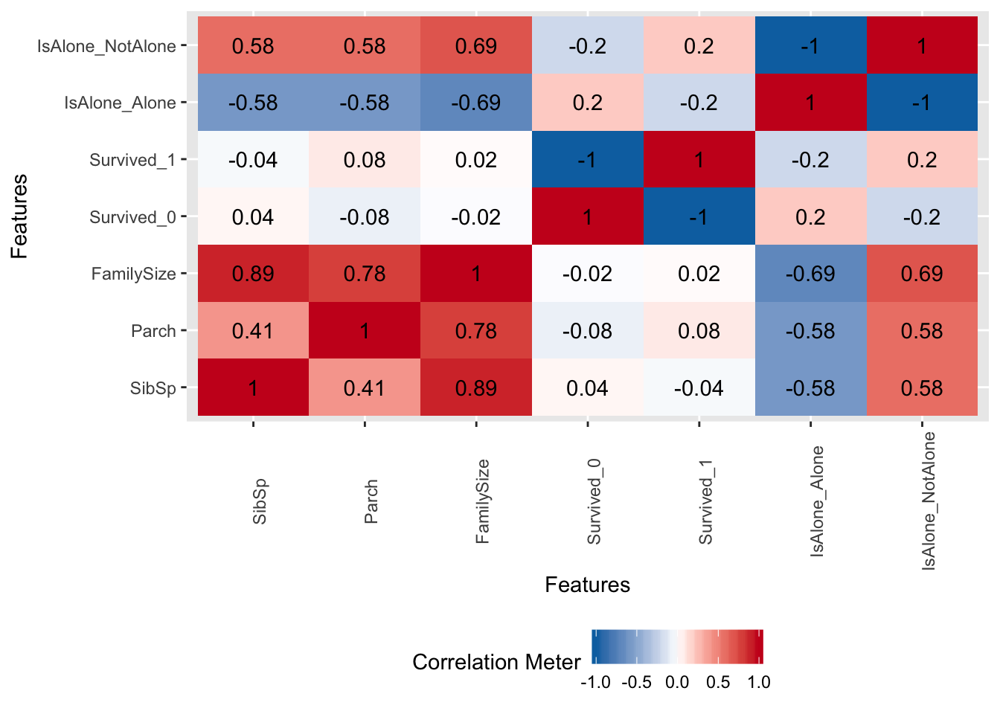
5.3.3.7 Nameと生存率
Name変数に含まれるTitle(Mr, Miss, Dr など)を抽出する
# Nameに含まれるTitleと生存率について----
# NameからTitleを抽出
data_eda %<>%
mutate(
Title = Name %>% str_extract("\\w+\\.") %>% str_remove("\\.")
)
# Titleの中身を確認
data_title <-
data_eda %>%
group_by(Title) %>%
dplyr::summarize(count=n()) %>%
arrange(desc(count))
data_title %>% print# # A tibble: 17 x 2
# Title count
# <chr> <int>
# 1 Mr 517
# 2 Miss 182
# 3 Mrs 125
# 4 Master 40
# 5 Dr 7
# 6 Rev 6
# 7 Col 2
# 8 Major 2
# 9 Mlle 2
# 10 Capt 1
# 11 Countess 1
# 12 Don 1
# 13 Jonkheer 1
# 14 Lady 1
# 15 Mme 1
# 16 Ms 1
# 17 Sir 1# Titleの数が基準値(stat_min)よりも小さければ「Misc」としてまとめる
# (Titleに対する過学習を防ぐため)
stat_min <-5
title_names <- data_title$Title[data_title$count < stat_min]
data_eda %<>%
mutate(Title=ifelse(is.element(Title,title_names),"Misc",Title) %>% factor)Title毎の生存率を確認
- 男女合算で
Title別生存率を見ると、男女差の効果に埋もれてしまいTitleの効果が分かりづらい - 男女別に
Title別生存率を見ると、Dr, Master, Misc では生存率が上がり、Rev(牧師)は生存者がいないことが分かる。 Survivedを説明する変数として後々使用することとする。
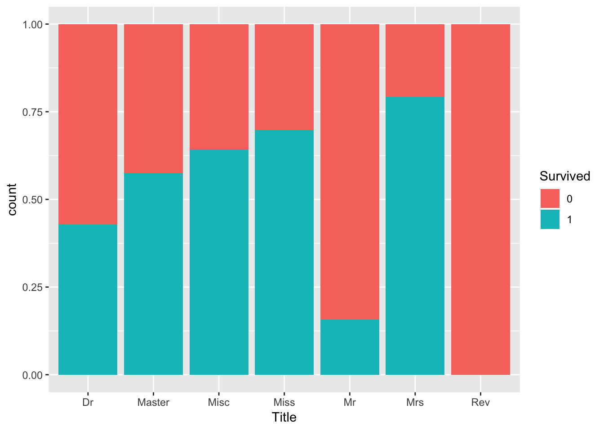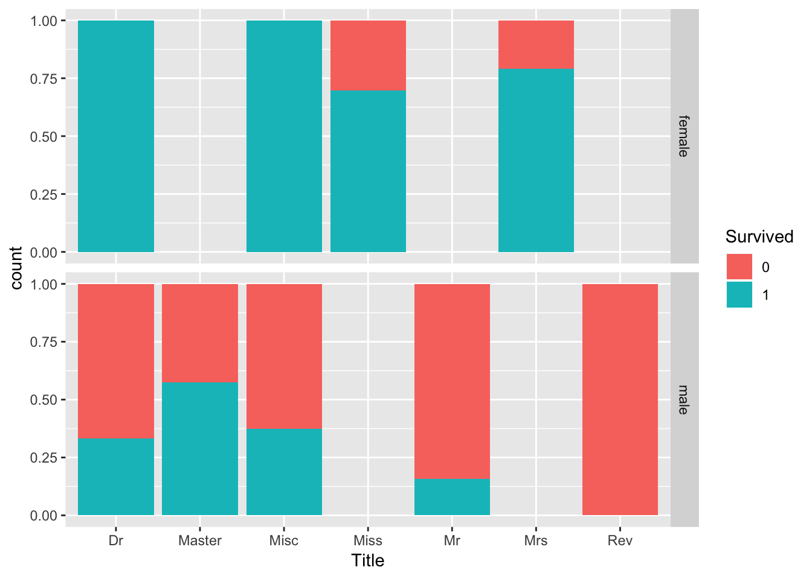
5.3.4 Converting(データのフォーマット変更)
「4C」の最後の一つである、機械学習用のフォーマット変更を行う。
- 不必要な説明変数(Name,Ticket,FamilySize,Age,Fare)は削除する
- factor変数はone-hotベクトル表現に変換(
createDummyFeatures()を使用)
# 今一度データの中身を確認----
data_eda %>% head(50) %>%
datatable(
rownames = FALSE,
class = 'nowrap',
extensions = c('FixedColumns','Scroller'),
options = list(
# FixedColumns
dom = 'Bfrtip',
scrollX = TRUE,
# Scroller
deferRender = TRUE,
scrollY = 200,
scroller = TRUE
)
)#data_eda %>% View
data_eda %>% map(class) %>% list.tree(maxcomp=15)# . = list 15 (3024 bytes)
# . Survived = character 1= factor
# . Pclass = character 1= factor
# . Name = character 1= character
# . Sex = character 1= factor
# . Age = character 1= numeric
# . SibSp = character 1= integer
# . Parch = character 1= integer
# . Ticket = character 1= character
# . Fare = character 1= numeric
# . Embarked = character 1= factor
# . AgeBin = character 1= factor
# . FareBin = character 1= factor
# . FamilySize = character 1= numeric
# . IsAlone = character 1= factor
# . Title = character 1= factor# Converting(データのフォーマット変更)----
# 1.不必要な説明変数(Name,Ticket,FamilySize,Age,Fare)を削除
# 2.mlr::createDummyFeatures()でfactor型をダミー変数に変換
data_ml <-
data_eda %>%
select(-Name, -Ticket, -FamilySize, -Age, -Fare) %>%
createDummyFeatures(target="Survived")5.3.4.1 定量的データのビニングについて
- 定量的データをビニングすると線形モデル等の一部のアルゴリズムでは精度が向上することもある。
- ただし決定木等のアルゴリズムでは精度変わらない or 悪化する可能性もあり。
- 参考：Pythonではじめる機械学習
6 データモデルの作成
- 説明変数をもとに、目的変数を予測するモデルの作成を行う。
6.1 アルゴリズムの分類
- 機械学習のアルゴリズムは大きく以下ように分類できる。
- 教師あり学習:正しい答えを含む訓練データセットを使用してモデルの訓練を行う。
- 分類:離散変数を目標変数とする教師あり学習
- 回帰:連続変数を目標変数とする教師あり学習
- 教師なし学習:正しい答えが含まれない訓練データセットを使用して、モデルの訓練を行う。
- 次元削減:データセットの次元数を何かしらの基準に基づき低次元へと削減する。
- クラスタリング:データセットを何かしらの基準に基づきグループに分ける。
- 強化学習:上記２つの学習のハイブリッド。モデルははじめから正しい答えを与えられるのではなく、一連のイベントのあとで答えを与えられる。
- 教師あり学習:正しい答えを含む訓練データセットを使用してモデルの訓練を行う。
- 今回のプロジェクトは教師あり学習(回帰)に分類される。
6.2 mlrによるモデル作成の流れ
mlrパッケージを使った際のデータモデル作成の流れの一例を記載する。mlrに関するより詳細な説明は有志による本家チュートリアルの日本語訳を参照。
- タスクの定義
- 実行したい機械学習の種類(回帰、分類etc), 訓練データ, 目的変数の定義を行う。
- 学習器の構築
- タスクを実行するために、どの機械学習のアルゴリズムを使用するか選択する。
- 学習器の性能評価
- ベンチマーク試験を行い、学習器の性能を評価する。
- チューニング
- 学習器の性能が足りない場合、チューニングを行い精度の向上を目指す。
- ハイパーパラメータの最適化、前処理方法の見直し、説明変数の変更などを行う。
- 今回のプロジェクトでは実際にハイパーパラメータのチューニングを行なってみる。
6.3 タスクの定義
二値分類問題の場合はmakeClassifTaskでタスクの定義を行う。
# タスクの定義----
titanic.task = makeClassifTask(id="titanic",data=data_ml,target="Survived")
titanic.task %>% print# Supervised task: titanic
# Type: classif
# Target: Survived
# Observations: 891
# Features:
# numerics factors ordered functionals
# 30 0 0 0
# Missings: FALSE
# Has weights: FALSE
# Has blocking: FALSE
# Has coordinates: FALSE
# Classes: 2
# 0 1
# 549 342
# Positive class: 06.4 学習機の構築
listLearners()で使用できる学習器の一覧を確認できる。makeLearner()で学習器の構築を行う。
# 使用できるアルゴリズムの一覧を出力----
# properties = "prob" : 確率を出力できるアルゴリズムの一覧
#listLearners(titanic.task, properties ="prob") %>% View
listLearners(titanic.task, properties ="prob") %>% head(50) %>%
datatable(
rownames = FALSE,
class = 'nowrap',
extensions = c('FixedColumns','Scroller'),
options = list(
# FixedColumns
dom = 'Bfrtip',
scrollX = TRUE,
# Scroller
deferRender = TRUE,
scrollY = 200,
scroller = TRUE
)
)# 使用するアルゴリズムをリスト化---
titanic.lrns =
list(
makeLearner("classif.kknn", id="kknn")
,makeLearner("classif.naiveBayes", id="naiveBayes")
,makeLearner("classif.nnet", id="nnet")
,makeLearner("classif.gausspr", id="gausspr")
,makeLearner("classif.svm", id="svm")
,makeLearner("classif.rpart", id="rpart")
,makeLearner("classif.randomForest", id="randomForest")
,makeLearner("classif.xgboost", id="xgboost")
)6.4.1 アルゴリズムの選び方
- 「すべてのデータセットに対して最も良い予測精度を返すモデル」は存在しない。
- 最適なアルゴリズムが知りたければ、一通り全てのアルゴリズムを試してみるのが一番早い。
- といいつつ、実際はとりあえずXGBoost か Fandom forestを使っている人も割と多い。
6.5 学習機の性能評価
- ベンチマーク試験は
benchmark()で実行。 - ベンチマーク試験の結果はプロットすることができる。
# チューニング前の各アルゴリズムの性能を評価----
titanic.bmr = benchmark(
learners = titanic.lrns,
tasks = titanic.task,
resamplings = cv5,
measures = list(acc,timetrain)
)# ベンチマークテストの結果(精度)をグラフで確認----
g1<-
plotBMRBoxplots(
titanic.bmr,
measure = acc,
style="violin"
) +
aes(color = learner.id) +
theme(strip.text.x = element_text(size = 6))
g1 %>% print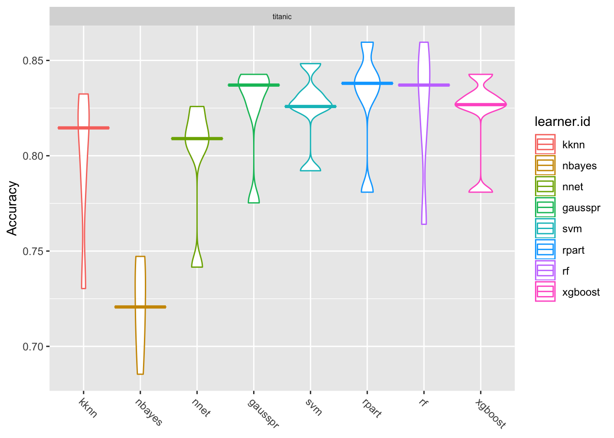
# ベンチマークテストの訓練にかかった時間をグラフで確認----
g2<-
plotBMRBoxplots(
titanic.bmr,
measure = timetrain,
style="violin"
) +
aes(color = learner.id) +
theme(strip.text.x = element_text(size = 6))
g2 %>% print6.6 モデルのパフォーマンス評価
- 基本的なデータの整形・機械学習により、80%弱の精度で乗客の生存を予測できた。
- 数行のコードの割には悪くない精度に見える。
- モデルの性能を改良する前に、これ以上時間をかけて改良する価値があるかを考える。
- 例えば、精度を0.1%上げるために3ヶ月の開発期間を設ける価値はあるか？
- 研究所勤務なら時間をかける価値はあるし、ビジネスの現場では時間をかける価値はない。
6.6.1 ベースライン精度の決定
- モデルを改良する際は、ベースとなるモデルが改良する価値があるかを判断する必要がある。
- 性能の悪いモデルを地道に改良するより、新しいモデルを一から作るほうが早いかもしれない。
- 判断基準としては、オッズ比を使用するのが最も簡単
- 今回のプロジェクトであれば、訓練データから61.6%の確率で乗客が死亡していることから、推定精度がそれ以下となるモデルは改良するに値しないと判断する。
6.7 ハイパーパラメータのチューニング
「改良する価値がある」と判断したモデルについて、ハイパーパラメータのチューニングを行う。
6.7.1 グリッドサーチ用のパラメータを設定する。
makeParamSet()により、探索したいパラメータを設定。- 各モデルのチューニング可能なパラメータを知りたい場合は
getParamSet()やヘルプを確認する
# svmについてチューニングできるハイパーパラメータを確認----
getParamSet("classif.svm")# Type len Def
# type discrete - C-classifica...
# cost numeric - 1
# nu numeric - 0.5
# class.weights numericvector <NA> -
# kernel discrete - radial
# degree integer - 3
# coef0 numeric - 0
# gamma numeric - -
# cachesize numeric - 40
# tolerance numeric - 0.001
# shrinking logical - TRUE
# cross integer - 0
# fitted logical - TRUE
# scale logicalvector <NA> TRUE
# Constr Req Tunable Trafo
# type C-classification,nu-classification - TRUE -
# cost 0 to Inf Y TRUE -
# nu -Inf to Inf Y TRUE -
# class.weights 0 to Inf - TRUE -
# kernel linear,polynomial,radial,sigmoid - TRUE -
# degree 1 to Inf Y TRUE -
# coef0 -Inf to Inf Y TRUE -
# gamma 0 to Inf Y TRUE -
# cachesize -Inf to Inf - TRUE -
# tolerance 0 to Inf - TRUE -
# shrinking - - TRUE -
# cross 0 to Inf - FALSE -
# fitted - - FALSE -
# scale - - TRUE -# パラメータの意味が知りたい場合はヘルプを確認----
#?svm
# グリッドサーチ用のハイパーパラメータを設定----
grid_n_estimator = c(10, 50, 100, 300)
grid_ratio = c(.1, .25, .5, .75, 1.0)
grid_learn = c(.01, .03, .05, .1, .25)
grid_max_depth = c(2 ,4, 6, 8, 10)
titanic.ps = list(
# kknn
makeParamSet(
makeDiscreteParam("k" ,values = c(1,2,3,4,5,6,7)),
makeDiscreteParam("distance" ,values = c(1,2)),
makeDiscreteParam("kernel" ,values = c("rectangular","inv","gaussian","optimal"))
),
# naiveBayes
makeParamSet(
makeDiscreteParam("laplace" ,values = grid_ratio)
),
# nnet
makeParamSet(
makeDiscreteParam("size" ,values = c(1,3,5,7)),
makeDiscreteParam("maxit" ,values = grid_n_estimator),
makeDiscreteParam("decay" ,values = grid_learn)
),
# gausspr
makeParamSet(
makeDiscreteParam("kernel" ,values = c("rbfdot","polydot","vanilladot"))
),
# svm
makeParamSet(
makeDiscreteParam("cost" ,values = c(1,2,3,4,5)),
makeDiscreteParam("kernel" ,values = c("linear","polynomial","radial","sigmoid")),
makeDiscreteParam("gamma" ,values = grid_ratio)
),
# rpart
makeParamSet(
makeDiscreteParam("cp" ,values = c(.001, .005, .01, .025, .05))
),
# randomForest
makeParamSet(
makeDiscreteParam("ntree" ,values = grid_n_estimator),
makeDiscreteParam("mtry" ,values = c(1, 2, 3, 4, 5))
),
# xgboost
makeParamSet(
makeDiscreteParam("eta" ,values = grid_learn),
makeDiscreteParam("max_depth" ,values = grid_max_depth),
makeDiscreteParam("nrounds" ,values = grid_n_estimator)
)
)6.7.2 グリッドサーチの実行
tuneParams()でグリッドサーチを実行する。- 複数アルゴリズムに対してグリッドサーチを実行するために
purrrパッケージの関数を使用する。
# グリッドサーチを実行----
titanic.res =
map2(
.x = titanic.lrns,
.y = titanic.ps,
.f =
~ tuneParams(
learner = .x,
task = titanic.task,
resampling = cv5,
measures = acc,
par.set = .y,
control = makeTuneControlGrid()
)
)6.7.3 チューニングされたハイパーパラメータの設定
setHyperPars()により最適化されたハイパーパラメータを設定する。
# チューニングされたハイパーパラメータを設定----
titanic.lrn.tuned <-
map2(
.x = titanic.lrns,
.y = titanic.res,
.f =
~ setHyperPars(
learner = .x,
par.vals = .y$x
)
)6.7.4 チューニング後の性能確認
チューニング前と同様、benchmark()にてベンチマーク試験を実施。
# チューニング後の性能を確認----
titanic.bmr.tuned <-
benchmark(
learners = titanic.lrn.tuned,
tasks = titanic.task,
resamplings = cv5,
measures = list(acc,timetrain)
)# ベンチマークテストの結果をプロット----
g1<-
plotBMRBoxplots(
titanic.bmr.tuned,
measure = acc,
style="violin"
) +
aes(color = learner.id) +
theme(strip.text.x = element_text(size = 6))
print(g1)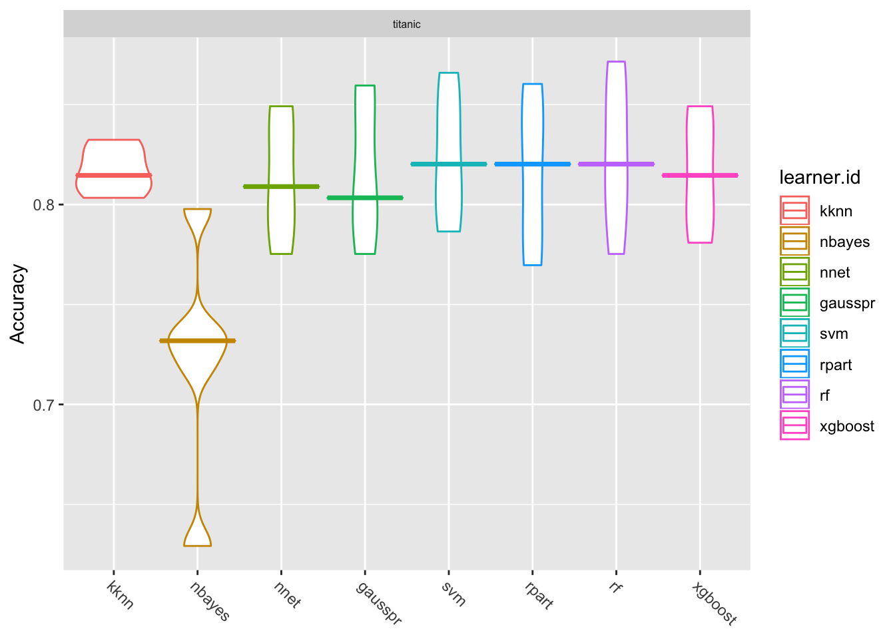
g2<-
plotBMRBoxplots(
titanic.bmr.tuned,
measure = timetrain,
style="violin"
) +
aes(color = learner.id) +
theme(strip.text.x = element_text(size = 6))
print(g2)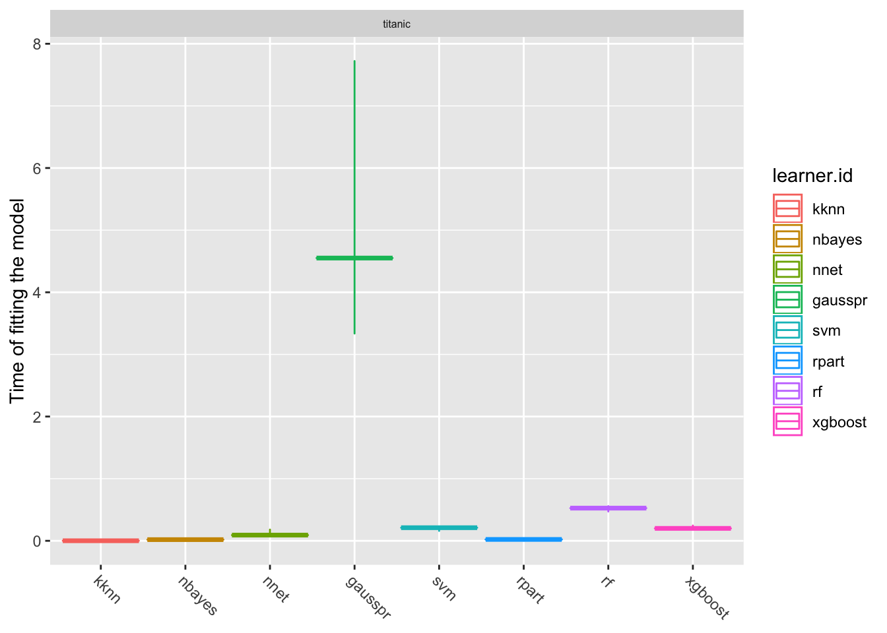